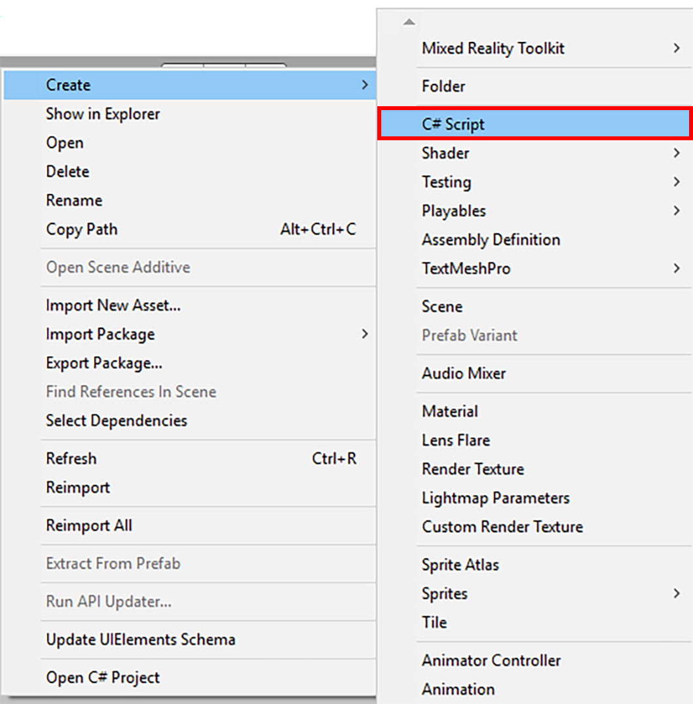
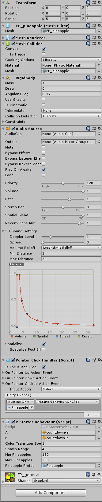
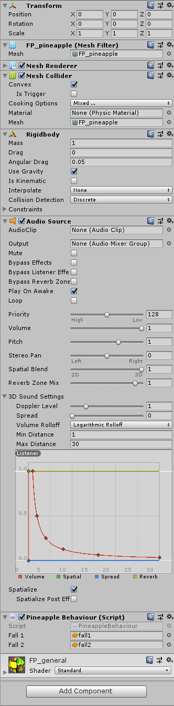

This is where I will be hosting three blog posts about the Microsoft HoloLens
Hololens
Pineapple Your Way To Success
Post by Jessica Moffatt, April 8, 2019
Inspired, with a pineapple
Recap
In my previous blog post I showed you how to set up Unit for HoloLens development;
we even did a quick test deployment of a static hologram. With that all completed, it would be nice to
create something a bit more interesting though, right?
So, as a continuation we are going to create an app today that makes pineapples rain from the sky in 4 easy steps! Neat!
1. Import Some Assets
There are various assets we will need imported into our project before we can really begin.
To start off we're going to need a pineapple. I found a free one in the Unity app store for free, which you can get HERE.
You can of course use whatever 3D model you want, it might be a bit more tricky if you pick one made of a lot of different
components, so at least for now I recommend trying it out with the linked one first.
To import the pineapple, select the Asset Store tab (if you don't see it, select from the main toolbar: Window->Asset Store) and in the search bar type in "Pineapple", the asset I linked above should be the last result.
Scroll down and click the giant Import button. During the actual import process, just select the assets related to the pineapple, if you aren't sure which ones to select just select them all it's not a big deal.
We are going to make our app more interesting through including some audio clips that will trigger on hit as well as a count down audio clip.
For the sound effect of the pineapple hitting the ground, I used 2 of the 3 clips found HERE.
For the count down sound, I used the two clips found HERE.
To import the audio, on the main toolbar click Assets->Import New Asset and navigate to where the audio was downloaded to. Import them and move them into their own folder called
Audio. It shouldn't exist yet, so to create the folder just right click on the Assets folder in the Project View and choose Create New Folder, now you can move the audio files into it.
2. Creating A Script For Your Pineapple
Getting ready to code your script
The goal of this application is as follows: Start off with stationary pineapple, once clicked a countdown will occur. On 3, the pineapple will fall to the ground, and multitudes of pineapples will start to rain from the sky.
In order to accomplish this, we will need to consider a few things:
We need to be able to register click events with the HoloLens.
We need triggers to detect when the pineapples hit the ground, so we can know when to play sound effects.
In order for the pineapples to fall from the sky, we need some physics (ie: gravity).
We don't want too many pineapples to fall at once, else the HoloLens will start to lag.
We need to clear out old pineapples to make room for new ones, so they will need a lifespan.
With all of that in mind, lets get to it.
Right click on the Assets folder located in the Project Panel, create a new folder called "Scripts".
Within the Scripts folder, right click and select Create->C# Script. Name the created script "PineappleBehaviour".

Creating a new C# script
Repeat the previous step, this time calling the created script "PStarterBehaviour".
There is less to do with the PineappleBehaviour script, so let's start with that.
This script will be attached to every pineapple that falls from the sky;
this excludes the starting pineapple (that is what the PStarterBehaviour script will be for).
using System.Collections;
using System.Collections.Generic;
using UnityEngine;
[RequireComponent(typeof(AudioSource))]
public class PineappleBehaviour : MonoBehaviour
{
public AudioClip fall1;
public AudioClip fall2;
private AudioSource source;
public static List pineapples = new List();
void Start()
{
source = GetComponent();
source.loop = false;
pineapples.Add(gameObject);
}
void OnDestroy()
{
pineapples.Remove(gameObject);
}
void OnCollisionEnter(Collision col)
{
if (col.gameObject.tag.Equals("Floor"))
{
float choice = Random.value;
if(choice < 0.5f)
{
source.clip = fall1;
}
else
{
source.clip = fall2;
}
source.Play();
}
}
}
To start off [RequireComponent(typeof(AudioSource))] is just used to say that we want to make sure whatever object we attach this script to has an audio source component.
The next thing to mention would be the list of pineapples, this is just how we are going to keep track of how many pineapples are currently on screen.
Whenever a pineapple with this script attached gets created, it will add itself to this class level list (as seen in the Start method: pineapples.Add(gameObject);).
In our other script, we will be checking the size of this list to determin whether to let more pineapples fall from the sky or not.
Within the OnDestroy method we are making sure to remove the reference to this game object from the list of pineapples. Again, we want to have an accurate representation of the objects on the screen, so we need to make sure we are only holding alive pineapples within the pineapples list.
Lastly, within the OnCollisionEnter method we are checking to make sure that the object that was collided with is in fact the floor (in my example I was unable to get spatial understanding working, so I cheated and used a rectangle game object I attached to the camera with the tag of "Floor" to act as my floor. Hopefully when the HoloLens 2 comes out some good tutorials will be made by Microsoft showing how to actually create a reference to the floor and then you would need to edit this part of the code to work properly with that instead).
If it has collided with the floor, we want to randomly choose which audio clip to play (so it doesn't get to stale). Random.value gives you a random decimal number between 0 and 1, so we are changing it into an either or choice by spliting it at 0.5 and saying if it's less than that play the first sound, otherwise play the second.
Now onto the PStarterBehaviour script. This will be attached to our starting pineapple, to give it the count down behaviour and start the raining process.
using System.Collections;
using System.Collections.Generic;
using UnityEngine;
[RequireComponent(typeof(AudioSource))]
public class PStarterBehaviour : MonoBehaviour
{
public AudioClip a;
public AudioClip b;
private Renderer rend;
private AudioSource source;
private Color startColor;
public float colorTransitionSpeed = 1f;
public float spawnRange = 4f;
public int minPineapples = 150;
public int maxPineapples = 200;
public GameObject pineapplePrefab;
private bool started = false;
void Start()
{
rend = GetComponent();
startColor = rend.material.GetColor("_EmissionColor");
source = GetComponent();
source.loop = false;
}
void Update()
{
if(started == true && PineappleBehaviour.pineapples.Count < minPineapples)
{
StartCoroutine("MakeItRain");
}
}
public void OnClick()
{
StartCoroutine(PlayStartingSound());
}
public void OnMouseDown()
{
OnClick();
}
IEnumerator PlayStartingSound()
{
source.clip = a;
source.Play();
StartCoroutine(ChangePineappleColor(Color.red));
yield return new WaitForSeconds(a.length);
source.Play();
StartCoroutine(ChangePineappleColor(Color.yellow));
yield return new WaitForSeconds(a.length);
source.clip = b;
source.Play();
StartCoroutine(ChangePineappleColor(Color.green));
yield return new WaitForSeconds(b.length);
AddGravity();
}
IEnumerator ChangePineappleColor(Color endColor)
{
float timeToStart = Time.time;
startColor = rend.material.GetColor("_EmissionColor");
while (rend.material.GetColor("_EmissionColor") != endColor) // This is your target size of object.
{
rend.material.SetColor("_EmissionColor", Color.Lerp(startColor, endColor, (Time.time - timeToStart) * colorTransitionSpeed));//Here colorTransitionSpeed is the 1 or any number which decides the how fast it reach to one to other end.
yield return null;
}
}
private void AddGravity()
{
GetComponent().useGravity = true;
started = true;
}
IEnumerator MakeItRain()
{
while (PineappleBehaviour.pineapples.Count < maxPineapples)
{
Vector3 position = Camera.main.gameObject.transform.position + new Vector3(Random.Range(-spawnRange, spawnRange),1,Random.Range(-spawnRange, spawnRange));
GameObject newPineapple = Instantiate(pineapplePrefab, position, Quaternion.Euler(0.0f, 0.0f, Random.Range(0.0f, 360.0f)));
yield return new WaitForSeconds(Random.Range(0.5f,2f));
Destroy(newPineapple, Random.Range(2,7));
}
}
}
So let's break this down.
spawnRange is used to determin the maximum distance a pineapple will spawn as compared to where the player is standing.
It is worth nothing that I included an OnMouseDown method, this is not something that will be functional with the HoloLens system, it is just for testing purposes since there isn't a way to simulate the clicking gesture.
PlayStartingSoundM utilizes Unity's Coroutines to make sure that each clip plays to completion before moving on to playing the next sound, while simultaniously changing the color of the pineapple.
Changing the color relies on the pineapple having only one material. If you are using a more complex model, you would need to look into that yourself. You could potentially just get reference to all the materials and change them all at the same time? I'm not sure.
Oh yeah, to learn more about Coroutines, check out the Unity Manual on Coroutines (IEnumerators are explained there too).
The only other thing to methion is how I am adding gravity through the AddGravity method. All I'm doing is getting a reference to the Rigidbody and setting its gravity useage to true.
3. Adding Components To Your Pineapple
Getting ready to code your script
So in our script we've been referencing all these components that don't actually exist on our pineapples yet. So we need to add those real quick here.
So the first step is to make a couple of pineapple prefabs so we can attach some scripts and components to them.
If you imported the same pineapple as me, you will see that a Fruits_Pack - 3D_Models folder will have been created in your Assets folder.
If you expand it you will see there is a Prefabs folder, open that and locate the pineapple prefab they have. Drag the prefab onto the Hierarchy
Right click and rename it to "PineappleStarter". Drag over another instance onto the Hierarchy and rename this one to "Pineapple".
Now, you can either keep using the Prefabs folder we just opened, or you can create your own Prefabs folder under Assets.
Either way, you are going to want to drag the GameObjects from the Hierarchy into the Prefabs folder of your choice. This is how you create a prefab.
With all of that in mind, I am going to list off all the Components you will want to have attached to the PineappleStarter GameObject as well as the Pineapple GameObject.
PineappleStarter

Components for the PineappleStarter
Mesh Collider
Check Convex
Rigid Body
Use Gravity is not checked
Audio Source
Set Spatial Blend all the way to the right for 3D spatialization
Lower the Max Distance to 30, we don't need that much distance for this application
Check Spatialize
Pointer Click Handler
This one is a bit more involved than the others, as this is where we will be setting up our OnClick event.
Check Is focus Required
Expand, On Pointer Clicked Action Event, change the Input Action to Select, drag an instance of the PineappleStarter prefab unto the empty section under the selector that says "Runtime Only" (check the image to see what I mean), and with the right selector select the PStarterBehaviour script's OnClick method.
P Starter Behaviour (Script)
Drag the each of the two count down audio files we downloaded earlier into the A and B fields. Also, drag a copy of the Pineapple prefab into the Pineapple Prefab field. Leave the rest of the values at there defaults; though this is where you would go if you wanted to change some things like min and max number of pineapples.
Pineapple

Components for the Pineapple
Mesh Collider
Check Convex
Rigid Body
Check Use Gravity
Audio Source
Set Spatial Blend all the way to the right for 3D spatialization
Lower the Max Distance to 30, we don't need that much distance for this application
Check Spatialize
Pineapple Behaviour (Script)
Drag the each of the two falling audio files we downloaded earlier into the Fall 1 and Fall 2 fields.
4. Putting It All Together
These guinea pigs are ready to put it all together, are you??
Putting it all together is real easy. Just drag a copy of the PineappleStarter onto the Hierarchy. Follow the same instruction as from my last post, and move the pineapple farther out so you can see it in the
Now all you have to do is follow my last blog's instructions on how to deploy your app and you are set!